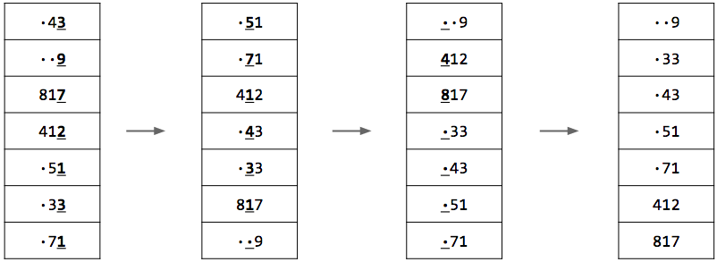
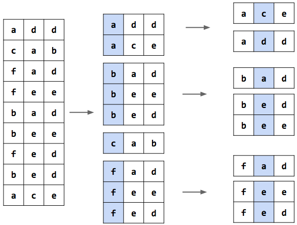
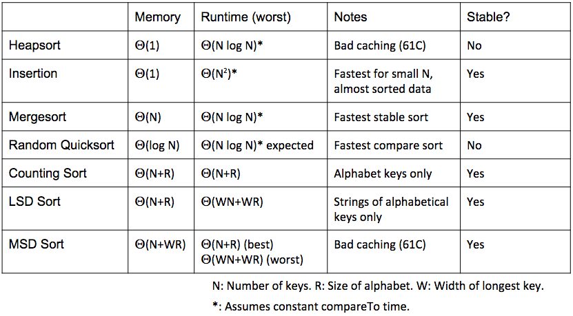

Lecture 36 - 04/19
Sorting V - Radix Sort
- From last time, we showed that a comparison based sorting algorithm can be at best Θ(NlogN) time, since N elements have N! possible combinations, and we must make logN! comparisons to determine the correct ordering (which is equivalent to NlogN as both functions grow at the same rate)
- New idea: sort without comparing elements with each other - rather, use intrinsic properties of the elements themselves
- Naive implementation: sleep sort for integer sorting (bad algorithm):
- For each integer x in some array A, do the following simultaneously:
- Sleep for x seconds
- Print out x
- The order in which elements are printed out tells us the correct sorted order
- The runtime of this is Θ(N+max(A))
- However this isn't practical, as on real machines scheduling so many threads of the program to simultaneously run affects runtime. Also bad for an array where max(A) is very high
- Improvement: Basic Counting Sort:
- Let us have an array of size N, each element of which has a unique key, numbering from 0 to N−1
- Sort by creating a new array of size N
- Then copy the item with key i into the ith position of the new array
- Runtime is Θ(N), but this has very limited application - what if we are dealing with non-unique keys/non-consecutive keys/non-numerical keys
- Better Counting Sort:
- There is a simple solution to solving the problems of non-unique keys
- Let our array of size N have X different types of keys - each key must take on an element in X, and X is an "alphabet" for the keys
- Then, before doing any sorting at all, go through the entire array, counting how many occurences of each key (each element of X) occur in the array
- We will use these counts for determining the index at which to copy elements in the second phase of the sort
- For example, let us have an alphabet X={k1,k2,k3} for an array of size N=12, the counts of which are respectively {4,6,2}
- Then, we create an array P of size |X| (in this case 3), to stor,e pointers corresponding to where we will insert an upcoming element of key kk. This array is initialized as P={0,4,10}
- When we come across an element of key Kk, we look at it's corresponding index pointer in P, copy at this location, and then increment the pointer in P
- So for example if the first element we find is of key k2, we insert at index 4 in the new array, and P updates to {0,5,10}. Next if we find two elements of key k3, we insert at indices 10 and 11 respectively, and now have P={0,5,12}. Continue till we go through all N=12 elements of our input
- Note, counting sort will sort in Θ(N+R) where R is the size of our alphabet
- The sort also uses memory Θ(N+R)
- This sort is bad with non-consecutive keys. For example if our max-value key is 1000000, then we have an alphabet of size R=1000000. Sort is good when N≥R
LSD Radix Sort
- Not all keys belong to finite alphabets (for example, Strings), but all strings consist of characters from a finite alphabet
- Do a counting sort over this finite alphabet starting from the least significant digit (LSD) of an input, all the way to the most significant
- Each counting sort is with respect to only one digit of the input at a time
- For example, if all input elements are of size W+1, first do a sort over just the Wth (least significant digit) of all the elements, then do the W−1th,... until we do the sort over the 0th and most significant digit
- We can deal with elements of non-equal size by having a small character "⋅" fill up all the missing digit positions of all the elements; this makes all elements now of equal size (the small character is smaller than all other characters)
- Example:
 - This algorithm has the same memory usage as a counting sort, but has a runtime of Θ(WN+WR), where W is the length of the longest element
- LSD vs Merge Sort:
- Merge Sort better when sorting a very large number of very large, dissimilar strings
- This is in large part due to how LSD sort looks at every single character in all the elements, while merge sort most likely will not need to - within the first few characters it can determine the ordering of elements
- This is an example of W dominating N
- LSD sort better when sorting a very large number of very large strings that are very similar, except at the lesser significance digits
- This is because in this case Merge Sort will look through almost all the digits in all the elements while trying to determine an ordering, while LSD sort finds an ordering much faster
MSD Radix Sort
- We can also sort from the other end, by starting with the first/most significant digits of all the elements, and then working towards the least significant digit
- After sorting by the ith digit on an alphabet Xi, we must split up the array into |Xi| different partitions, each of which contains all instances of a character in Xi found at the ith digit depth
- For example:
 - Best case: we finish the sort in a single pass, by only needing to look at the top digit: Θ(N+R)
- Worst case: we have to look at every character, which degenerates to a cache-heavy LSD sort: Θ(WN+WR)
- WR term because we recurse W levels deep, and at each level we create an array of size R for the counting sort at the level
Radix Sort Summary
- In practice, radix sorts are used only in special cases, such as for sorting integers
- A comparison-based sort is much more commonly used in actuality
- Radix sorting is natural for integers and strings, for which the alphabet to sort by is well defined
- We can generalize this sort to any input type object, but this could be awkward
Sorting Summary
